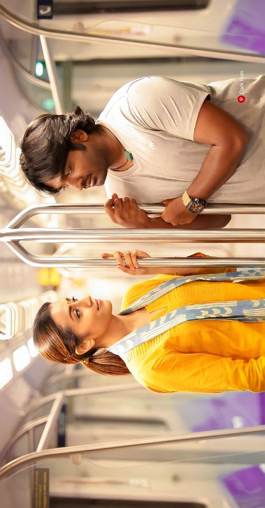
96
“Some memories never grow old.”
Built by Salman
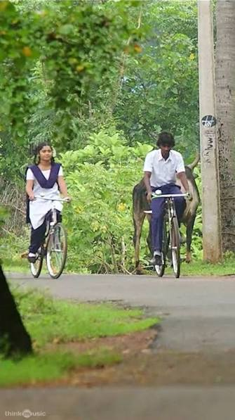
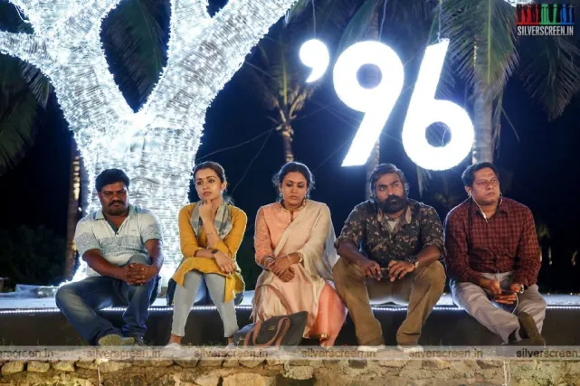
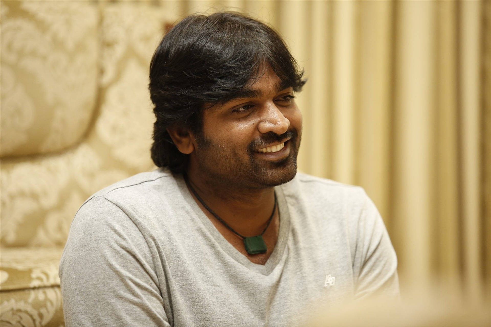
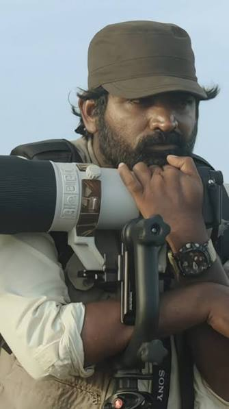
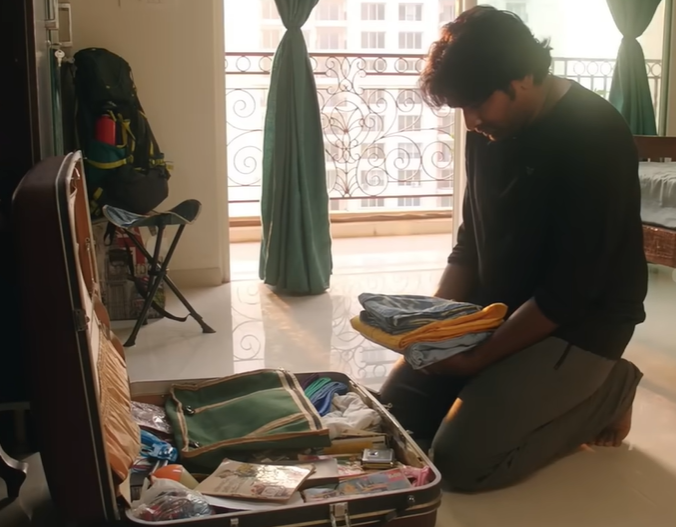
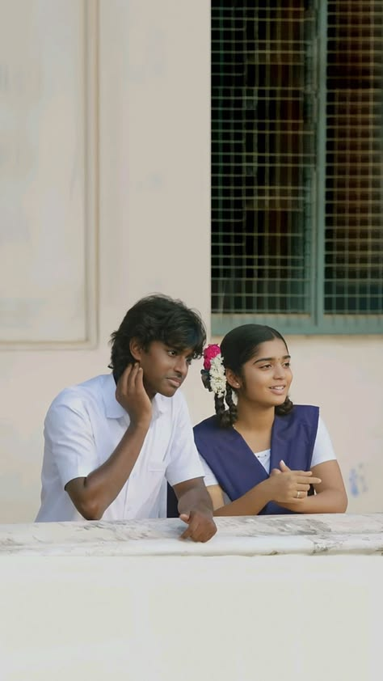
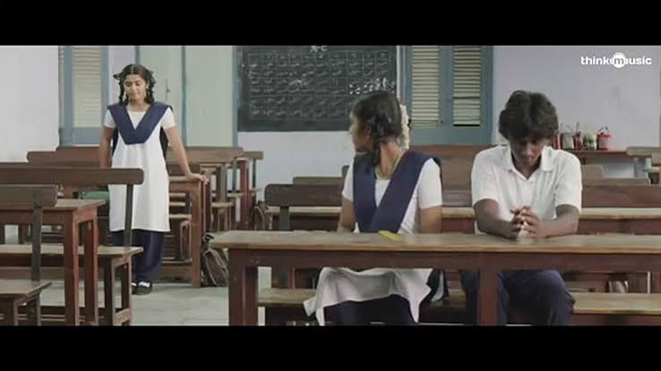
THE SCHOOL
“Where everything began.”
A small village in Thanjavur. Morning bicycle rides under banyan trees, classroom benches carved with unspoken feelings, and the melody of raindrops on tin roofs.
THE REUNION
“After twenty-two years, one room holds all the unspoken words.”
Laughter of old classmates echoes through the warm Chennai restaurant. But amidst the chatter, two eyes meet across the table—and the rest of the world fades into silence.
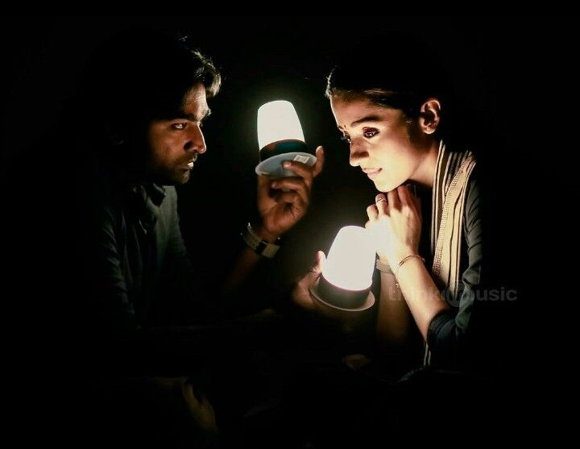
RAM & JAANU
“Some people leave your life.
Some memories never do.”
THE NIGHT
“A journey through the nocturnal streets of Chennai.”
From empty metro trains to late-night salon chairs and midnight filter coffee on wet asphalt. A single night granted to relive a lifetime of lost tomorrows.
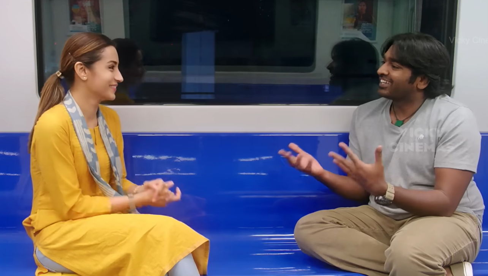
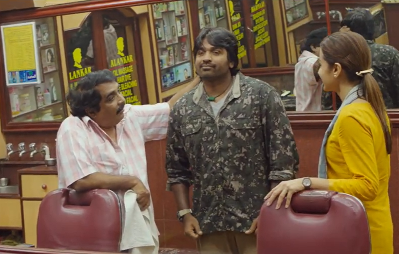
THE MEMORIES
Drifting photographs through the river of time
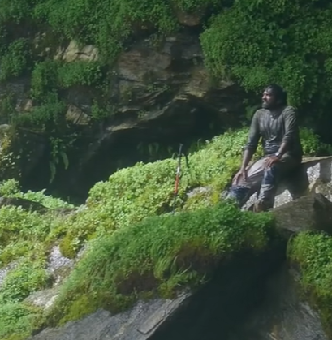
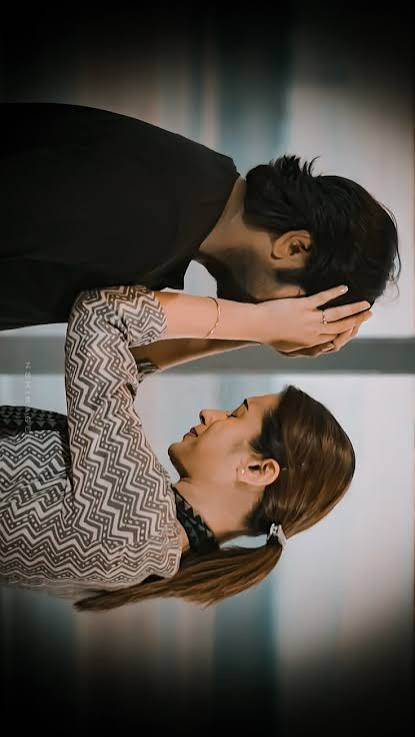
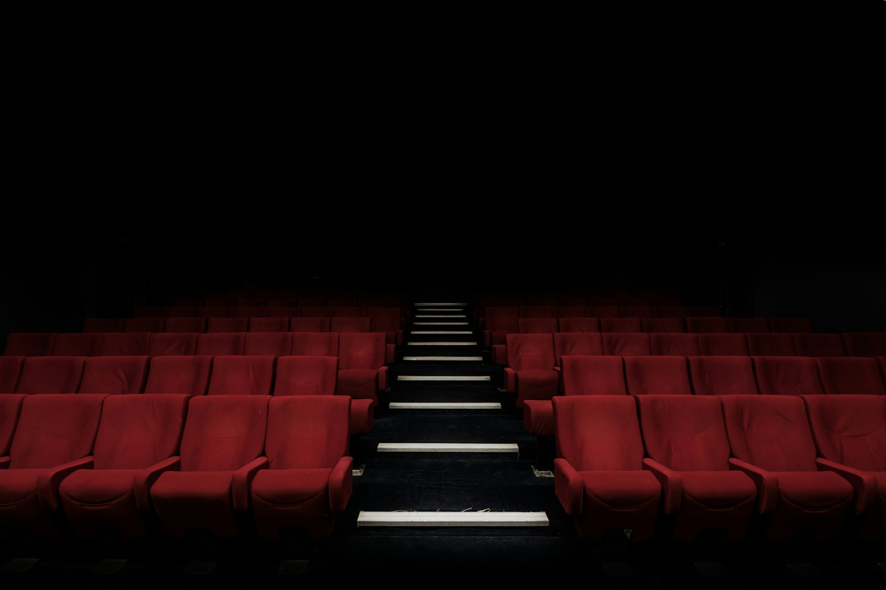
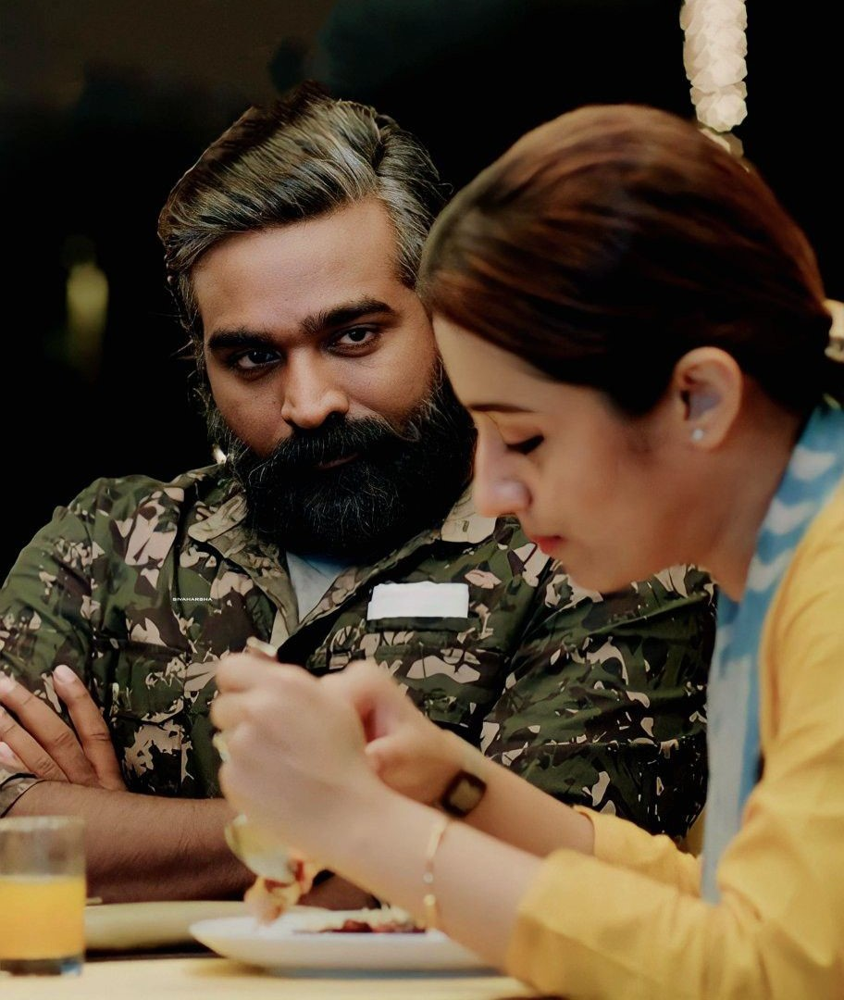
THE MEMORY WALL
Step inside a three-dimensional room of floating photographs. Move your cursor to orbit through the atmosphere and click any frame to inspect.
“Some memories are worth remembering forever.”
THE FILM
“A journey through Ram and Jaanu's memories.”
SCHOOL DAYS
Innocent high school days in Thanjavur. Cycle bells, classroom glances, rain on the path, and a love that needed no spoken declarations.
YEARS APART
Twenty-two years of solitude. Ram becomes a wanderer and wildlife photographer, carrying only his camera and preserved memories across mountains.
THE REUNION
A WhatsApp group reunites the Class of 1996. Jaanu arrives from Singapore; Ram enters the room, and time freezes instantly.
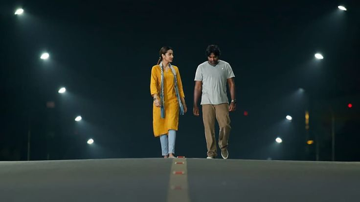
THE NIGHT
Walking through rain-washed Chennai streets, sitting in a 24-hour salon, sharing late-night tea, and unraveling 22 years of truth.
THE JOURNEY
Visiting Ram's modest apartment, looking through stacks of candid photography, and understanding why he never married.
THE GOODBYE
At the departure gate of Chennai International Airport. A final embrace, tears held back, and a yellow suitcase heading back into another life.
THE MEMORY
The carefully folded yellow dupatta placed gently into Ram's wardrobe—a sanctuary of eternal love that time can never fade.
IMAGE ARCHIVE
“Moments etched in 35mm silver and memory.”
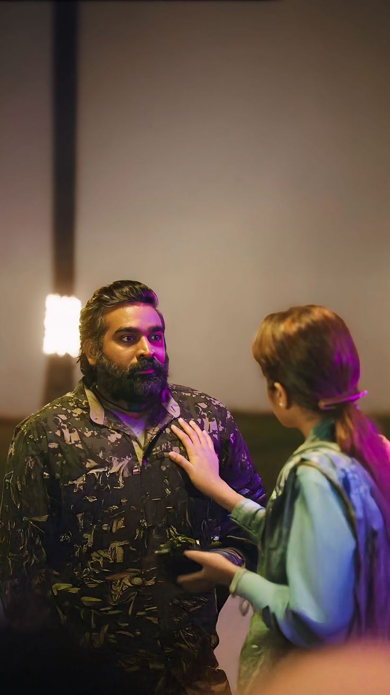
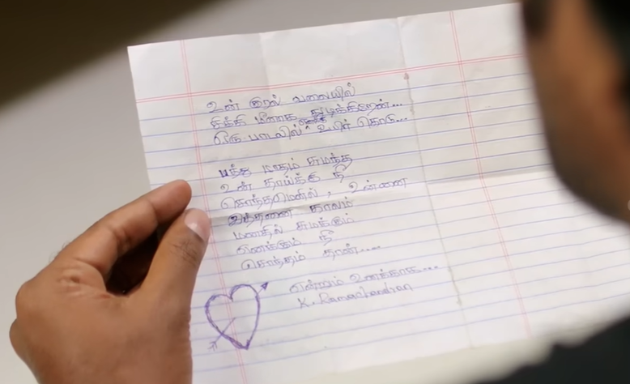